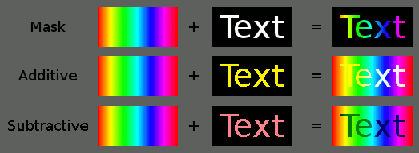

RGB matrix functions.
The function works on predefined
RGB matrix functions.
The function works on predefined
 Fixture Groups
created by the user with the
Fixture Groups
created by the user with the  Fixture Manager.
Fixture Manager.
The RGB matrix editor, as its name suggests, is used to edit
RGB matrix functions.
The function works on predefined
Fixture Groups
created by the user with the Fixture Manager.
| RGB matrix name | Change the name of the RGB matrix. |

|
Adjust the RGB Matrix speed settings:
|

|
Convert the current RGB Matrix into a Sequence. This is useful to speed up the creation of a Show. Please note that if the selected pattern generates random data, this functionality will generate a different Sequence every time. |

|
Switch the preview mode between circles and squares |

|
Make the RGB Matrix run as if it were started from a Virtual Console button. Note that the preview stops while the function is running. |
| Fixture group | The Fixture Group that is controlled by this RGB matrix. |
| Preview area | Shows a preview of the currently selected pattern imposed on the fixtures defined in the currently selected fixture group. Note that the preview doesn't show the difference between RGB-capable and monochrome/fixed color fixtures. |
| Pattern |
Select the pattern and colors that are used on the selected fixture group for drawing graphics. Patterns can be:
The rest of the pattern list is filled with RGB Scripts loaded when QLC+ starts up. Depending on the selected pattern, it is possible to choose a start and an end color. Some patterns do not allow colors at all (since they elapse them autonomously) or allow just one color. |
| Pattern Blend Mode | The blend mode is the mechanism used to mix multiple RGB Matrices running
one on top of the other. Here's a representation of how it works:  The matrix running on the bottom layer must use the default mode, to prepare a ground of colors that all the above layers can use to perform blending. |
| Pattern Color Mode | The color mode is the mechanism select which color channels the RGB Matrices applies to. Default setting is RGB mode, addressing RGB channels or CMY channels. If set otherwise, only the selected channels (e.g. "White") whill be set in a grayscale of the selected color(s). Channels not representing the selected color mode (e.g. R, G and B) will not be touched. |
| Offset |
Available only when Text or Image is the selected pattern.
|
| Run Order |
|
| Direction |
|
| Other Controls |
|
 is used to select the font (tip: bitmap fonts work best)
is used to select the font (tip: bitmap fonts work best) is used to load an image from file
is used to load an image from file